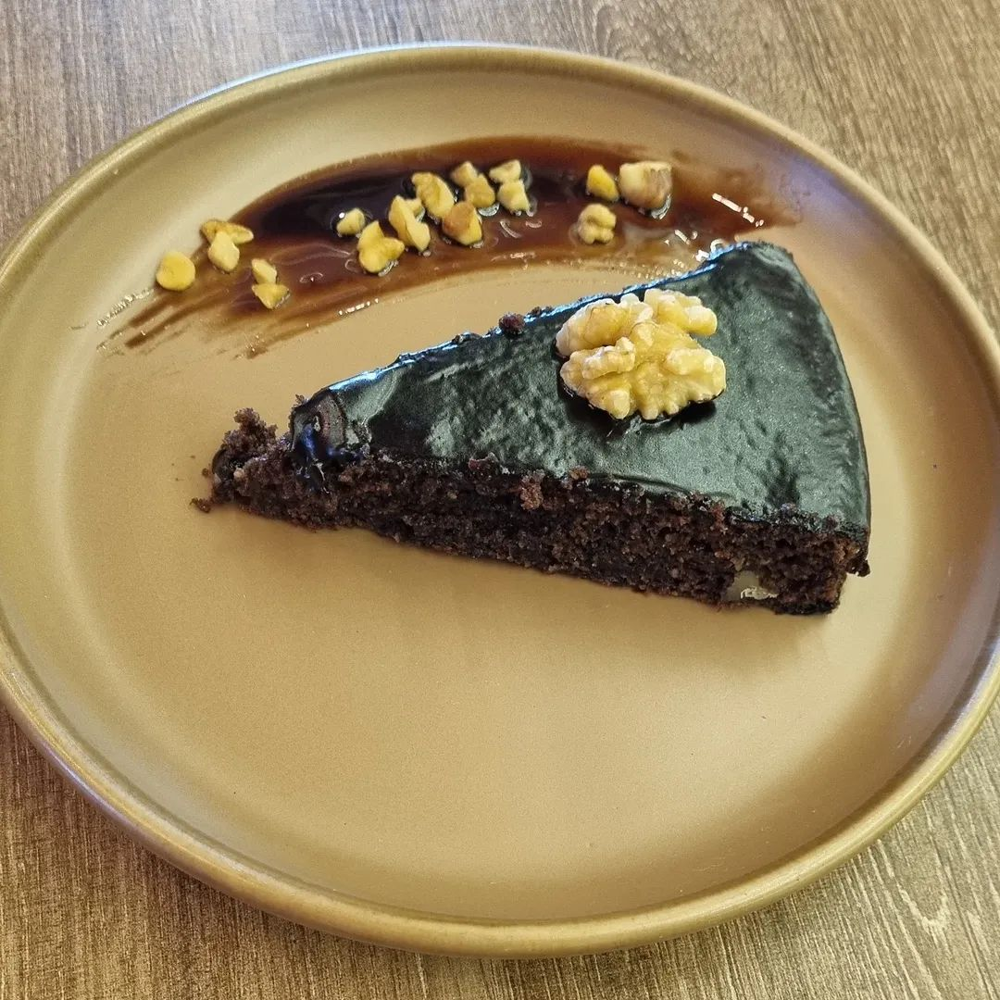
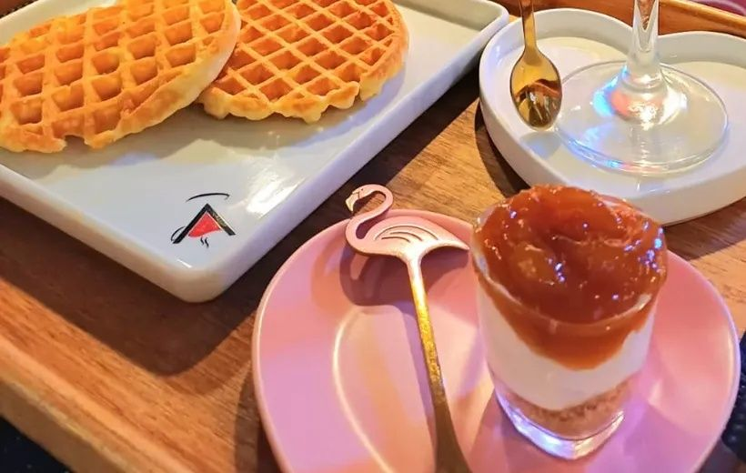

Uma pausa para o café em Icaraí
A Da Vinci's é uma cafeteria gourmet na Rua General Pereira da Silva. Entre, peça um café, escolha um doce e fique o tempo que quiser.
Destaques
Por que passar na Da Vinci's
Cafeteria gourmet
Cafés preparados com atenção, do espresso às bebidas com leite.
Doces para acompanhar
Sempre tem uma opção doce para combinar com o café.
Em Icaraí
Na Rua General Pereira da Silva, fácil de chegar.
Fale direto com a equipe
Dúvidas e pedidos pelo WhatsApp ou por telefone.
Cardápio Cardápio simulado
Cardápio
CARDÁPIO SIMULADO — itens ilustrativos. Valores por telefone ou WhatsApp. Montado só para esta prévia do site. O cardápio atual você confere no WhatsApp ou na loja.
Cafés Simulado4 itens
- EspressoCurto e encorpado
- CappuccinoEspresso, leite vaporizado e espuma
- Café com leitePara começar o dia
- MochaEspresso, chocolate e leite
Bebidas geladas Simulado2 itens
- MilkshakeCremoso, com chantilly
- Café geladoCom gelo, puro ou com leite
Doces Simulado3 itens
- Fatia de boloSabor do dia
- WaffleSimples ou com cobertura
- Sobremesa na taçaCamadas de creme e calda

Sobre
Sobre a Da Vinci's
A Da Vinci's Cafeteria Gourmet fica em Icaraí, no número 76 da Rua General Pereira da Silva. É o café de quem mora e trabalha no bairro: um espresso rápido de manhã, um doce no fim da tarde, um encontro com calma no sábado.
Café gourmet, pertinho de você.
Pedidos
Venha tomar um café com a gente
A Da Vinci's recebe você de segunda a sábado em Icaraí. Para tirar dúvidas ou combinar um pedido, chame no WhatsApp ou ligue.
- Entrega, retirada, encomendas e pagamento
- Consulte pelo WhatsApp
4,7 no Google · 422 avaliações
Conte como foi o seu café
Sua avaliação no Google ajuda outras pessoas de Niterói a conhecer a Da Vinci's.
Avaliar no GoogleContato
Onde estamos
Horário
Segunda a sexta: 10h às 19h30
Sábado: 9h às 19h
Domingo: fechado
Feriados: consulte pelo WhatsApp
Fale com a gente
- WhatsApp: (21) 3620-4773
- Telefone: (21) 3620-4773
- Instagram: @davincis_cafeteria
Que tal um café hoje?
Passe em Icaraí ou chame a Da Vinci's no WhatsApp.